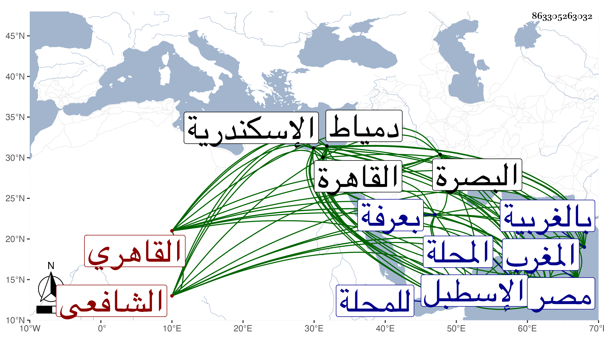

0902Sakhawi.DawLamic.ITO20230111-ara1.EIS1600.863305263032
Biography ID: 863305263032
571
محمد بن حسن بن على بن عثمان الشمس النواجى نسبة لنواج بالغربية بالقرب من المحلة ثم القاهري الشافعي شاعر الوقت ويعرف بالنواجي . ولد بالقاهرة بعد سنة خمس وثمانين وسبعمائة تقريبا ونشأ بزاوية الابناسي بالمقسم فحفظ القرآن والعمدة والتنبيه والألفية والشاطبية وكان يصحح في التنبيه على أبي بكر الشنواني الآتي وتلا القرآن تجويدا على الشمس الزراتيتي وأمير حاج امام الجمالية وابن الجزري بل قرأ عليهم لبعض السبع وعرض بعض محافيظه على الزين العراقي وغيره وأجاز له هو والهيثمي وابن الملقن فكأنهما في العرض أيضا وأخذ في الفقه عن الشمسين العراقي والبرماوي والبيجوري والعربية عن الشمسين الشطنوفي وابن هشام العجيمي والعلاء بن المغلي قرأ عليه شرح الألفية لابن أم قاسم والنحو مع غيره من المعقولات عن العز بن جماعة والبساطي واللغة وغيرها عن النور بن سيف الابياري نزيل البيبرسية وسمع عليه الحديث والحديث عن الولى العراقي وكتب عنه من أماليه وحضر دروسه وكذا أخذ عن شيخنا في آخرين سمع عليهم كابن الجزري فمن قبله فقد رأيت بخطه أنه سمع بعض ألفية العراقي عليه وكتب الخط المنسوب على ابن الصائغ وحج مرتين الأولى في رجب سنة عشرين واستمر مقيما حتى حج ثم عاد مع الموسم والاخرى في سنة ثلاث وثلاثين وحكى كما أورده في منسكه الذي سماه الغيث المنهمر فيما يفعله الحاج والمعتمر أنه رأى شخصا من أعيان القضاة الشافعية بالديار المصرية أراق دما على جبل عرفات فقال له ماهذا فقال دم تمتع فقال إنه غير مجزئ هنا قال ولم قال لأن شرطه أن يذيح ... في أرض الحرم وعرفات ليست من الحرم فقال كالمنكر عليه هذا المكان العظيم ليس من الحرم قال فقلت له نعم ولا يقدح هذا في شرفه فقال اذا لم تكن عرفات من الحرم فما بقى في الدنيا حرم انتهى . ونحو هذا القاضي قاض آخر تأخر عن هذا كان يقصر المغرب وروجع في ذلك فأصر وأنشد في منسكه:
| لا شيء أطيب عندي من مجاورتي | بيت ربي وسعيي فيه مشكور |
| قد أثرت في أفعال الكرام ولل ... | مجاورات كما قد قيل تأثير |
ودخل دمياط واسكندرية وتردد للمحلة وغيرها وأمعن النظر في علوم الأدب وأنعم حتى فاق أهل عصره فما رام بديع معنى إلا أطاعه فأنعم وأطال الاعتناء بالأدب فحوى فيه قصب السبق إلى أعلى الرتب ، وكتب حاشية على التوضيح في مجلدة وبعض حاشية على الجار بردي وشرحا للخزرجية في العروض وكتابا يشتمل على قصائد مطولات كلها غزل والشفاء في بديع الاكتفاء وخلع العذار في وصف العذار وكأنه تطابق مع الصلاح الصفدي في تسميته ، وصحائف الحسنات في وصف الخال وكأنه توارد أيضا مع الزين بن الخراط فيها وروضة المجالسة في بديع المجانسة ومراتع الغزلان في وصف الحسان من الغلمان وحلبة الكميت في وصت الخمر وكان اسمه أولا الحبور والسرور في وصف الخمور ، وانتقد عليه الخيرون جمعه بل حصلت له محنة بسببه حيث ادعى عليه من أجله وطلب منه فغيبه واستفتى عليه العز السنباطي البليغ المفوه فتيا بديعة الترتيب قال العز عبد السلام القدسي إنها تكاد تكون مصنفا وبالغ العز عبد السلام البغدادي في جوابه في الحط عليه وامتنع شيخنا من الجواب قيل لكون المصنف أورد له فيه مقطوعا ، وعقود اللآلا ... في الموشحات والأزجال والأصول الجامعة لحكم حرف المضارعة والمطالع الشمسية في المدائح النبوية وقد أنشد بعضها من لفظه بالحضرة النبوية حين حجته الثانية ، وكان متقدما في اللغة والعربية وفنون الأدب مشاركا في غيرها حسن الخط جيد الضبط متقن الفوائد عمدة فيما يقيده أو يفيده بخطه ، كتب لنفسه الكثير وكذا لغيره بالأجرة ، وكان سريع الكتابة حكى العز التكروري أنه شاهده كتب صفحة في نصف الشامي في مسطرة سبعة عشر بمدة واحدة وممن كان يرغب في كتابته ويجزل العطاء له بسببها وغيره التقي بن حجة الشاعر واختص لذلك بصحبته واستطال به على الجلال البلقيني فيما كان باسمه من مرتب وغيره ثم كان بعد من أكثر المؤذنين له في أول دولة الأشرف . وعمل كتابا سماه الحجة في سرقات ابن حجة وربما أنشأ الشيء مما نظمه التقي وعزاه لبعض من سبقه إلى غير ذلك مما تحامل عليه فيه ، وقد جوزي على ذلك بعد دهر فإن بعض الشعراء صنف كتابا سماه قبح الأهاجي في النواجي جمع فيه هجو من دب ودرج حتى من لم ينظم قبل ذلك وأوصل إليه علمه بطريقة ظريفة فإنه أمر بدفعه لدلال بسوق الكتب وهو جالس على عادته عند بعض التجار فدار به على أرباب الحوانيت حتى وصل إليه فأخذه وتأمله وعلم مضمونه ثم أعاده إلى الدلال وحينئذ استرجع من الدلال فكاد النواجي يهلك . وكذا رام المناوي في أيام قضائه الإيقاع به بسبب تعرضه بالهجو لشيخه الولي العراقي حيث قال إذا رأى سعدا يموت ويحيى فتوسل عنده بالعز السنباطي وغيره ثم امتدحه بقصيدة طنانة أنشده إياها من لفظه ، وبلغني أن شيخه أمير حاج كان يحكي أنه بينما هو واقف بعرفة في حجته ألقى الله في قلبه الدعاء عليه بسبب الولي وأنه فعل ولعل ما كان يذكر أنه به من البرص بسببه هذا . وأما شيخنا فإنه حلم عليه في أكثر الأوقات بل كان كثير البر له وأفادته إياه لما كان يشكل عليه حين مثوله بين يديه خصوصا حين كان الفقيه حسن الفيومي إمام الزاهد الماضي يصحح على النواجي في الترغيب للمنذري فإنه كان يقف عليه التكثير في المتون والرواة ولا يهتدي لمعرفتها من بطون الدفاتر والكتب نعم أنهى إليه أهل الخانقاه البيبرسية عنه أمرا شنيعا مما يتعلق بنفسه فأمر بمنعه منها ، اشتهر ذكره وبعد صيته وقال الشعر الفائق والنثر الرائق وجمع المجاميع وطارح الأئمة ، وأخذ عنه غير واحد من الأعيان كالشهاب بن أسد والبدر البلقيني والمحب الخطيب المالكي وكانت بينهما مصاهرة والبدر بن المخلطة ولولا ضيق عطنه وسوء مزاجه وسرعة انحرافه وتعرضه به للهجاء لكان كلمة إجماع ، ومدح الأكابر وتمول من ذلك وأثرى خصوصا مع مبالغته في الإمساك ، وممن امتدحهم المحب بن الشحنة وسمعته يقسم أنه من بعد القاضي الفاضل ما ولي الإنشاء مثله ، هذا مع مزيد إحسان الكمال بن البارزي كان إليه والزين بن مزهر وذلك حين كونه ناظر الإسطبل ولذا استغرب قوله :
| ومن يكون السر في أصله | لا بد أن يظهر فيه حقيق |
ومن قبلهما الزين عبد الباسط وقرره أحد صوفية مدرسته أول ما فتحت والكمال ابن البارزي وكان له عليه راتب والعلم البلقيني وشيخنا وله فيه غرر المدائح أودعت الكثير منها في الجواهر وكان بعد موته يقول ما بقي من اجتمع عليه الدين والدنيا هذا مع أنني سألته في رثائه فما أجاب ، واستقر في تدريس الحديث بالجمالية والحسنية برغبة ابن سالم له عنهما وعمل في الأولى إجلاسا وكنت ممن حضر عنده فيه وكتبت الخطبة التي أنشأها له وكذا كتبت عنه غيرها من نظمه ونثره وسمعت من فوائده ونكته جملة مات في يوم الثلاثاء خامس عشري جمادى الأولى سنة تسع وخمسين بعد أن برص وتغالى الناس في كتبه عفا الله عنه وإيانا . ومن نظمه في يوسف بن تغري بردى :
| لك الله المهيمن كم أبانت | حلاك اليوسفية عن معالي |
| وسقت حديث فضلك عن يراع | تسلسل عنه أخبار العوالي |
وفي شيخنا :
| أيا قاضي القضاة ومن نداه | يؤثر بالأحاديث الصحاح |
| وحقك ما قصدت حماك إلا | لآخذ عنك أخبار السماح |
| فأروي عن يديك حديث وهب | وأسند عن عطا بن أبي رباح |
وفي الناصري بن الظاهر :
| أصابعه عشر تزيد على المدى | فلا غرو إن أغنت عن النيل في مصر |
| فقم وارتشف يا صاح من فيض كفه | لتروي حديث الجود من طرق عشر |
والفيض نيل مصر قاله الأصمعي ونهر البصرة أيضا . وفي قصيدة نبوية :
| يا من حديث غرامي في محبتهم | مسلسل وفؤادي منه معلول |
| روت جفونكم أنى قتلت بها | فيا له خبرا يرويه مكحول |
وقوله متغزلا :
| إذا شهدت محاسنه بأني | سلوت وذاك شيء لا يكون |
| أقول حديث جفنك فيه ضعف | يرد به وعطفك فيه لين |
وشعره كثير مشهور .
